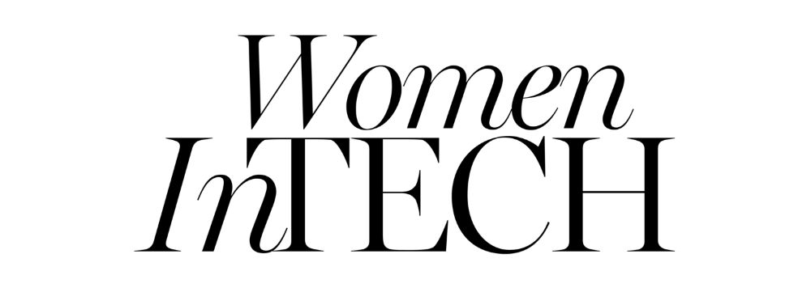
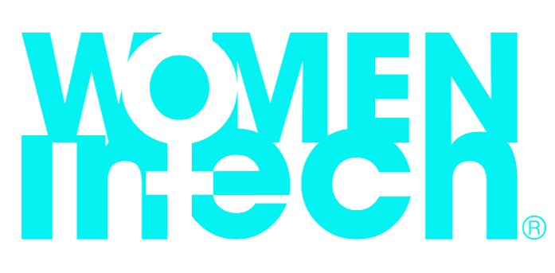
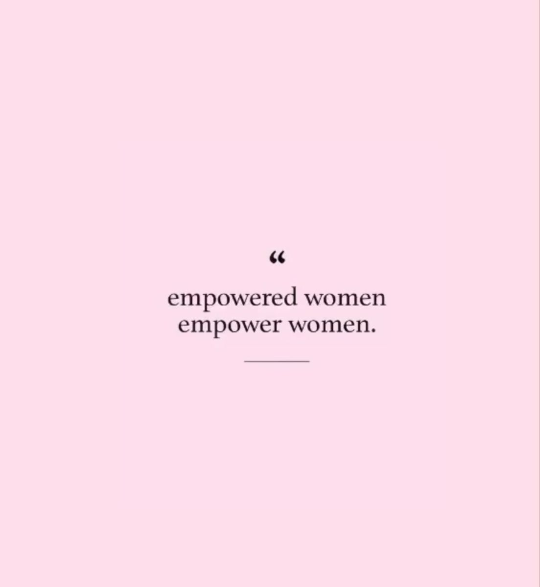

Because representation matters — in every dataset, every boardroom, every codebase.
A personal note
Why This Matters to Me
When I enrolled in Information Science — majoring in Data Analytics — I wasn't always sure I'd see myself reflected in the field. Tech spaces can feel designed for someone else. But every woman who showed up anyway, who shared her work, who refused to shrink — she made it a little easier for me to believe I belonged here too.
As a student navigating data, AI, and business, I've come to understand that the most powerful thing we can do is be visible. To show other young women in STEM — especially those from backgrounds like mine — that they can lead initiatives, win competitions, mentor others, and build things that matter.
This page is my small act of visibility. A tribute to the women who paved the way, and an invitation to those still finding theirs.
— Malebo Mathabatha
Celebrating brilliance
Women in Tech — Visual Gallery

Women in STEM
Exploring the frontier — where curiosity meets technology.

Code & Create
Every line of code is a step forward.

Data & Discovery
Turning data into insight, one iteration at a time.

Lead & Inspire
Support. Inspire. Empower. Repeat.

AI & Innovation
Women shaping the future of artificial intelligence.

Empower & Uplift
Lifting each other as we rise.
Empower & Uplift
Role models & inspiration
Women Who Inspire Me
A few trailblazers whose work, words, and presence remind me why representation matters in every room.
"The most courageous act is still to think for yourself. Aloud."
Fei-Fei Li
Co-Director, Stanford Human-Centred AI Institute — Pioneer in AI & Computer Vision
"If you're offered a seat on a rocket ship, don't ask what seat. Just get on."
Sheryl Sandberg
Former COO, Meta — Author of Lean In
"Science and everyday life cannot and should not be separated."
Rosalind Franklin
Pioneering Chemist whose work was fundamental to understanding DNA structure
"There is no limit to what we, as women, can accomplish."
Michelle Obama
Former First Lady, Author & Advocate for Education and Equality
"I was told I was dangerous. I think that's a great compliment."
Kiri Wagstaff
Machine Learning Researcher, NASA Jet Propulsion Laboratory
"We need to dare to be ourselves, however frightening or strange that self may prove to be."
May Sarton
Writer & Poet — on authenticity and courage
Organisations I admire